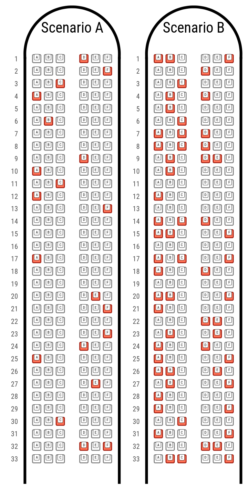
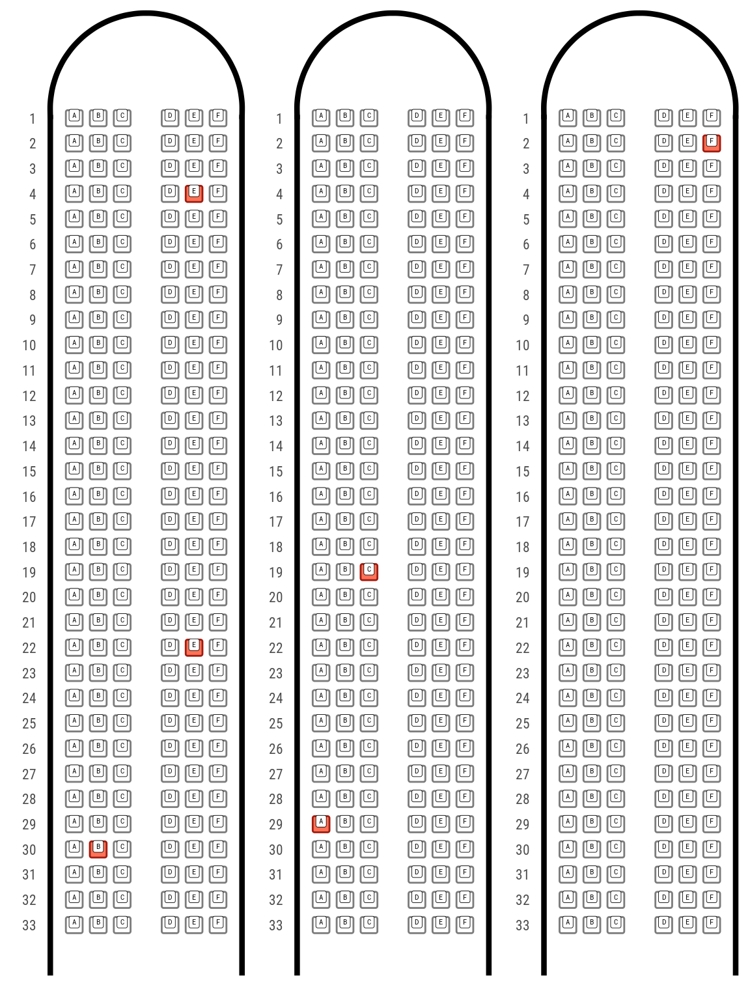
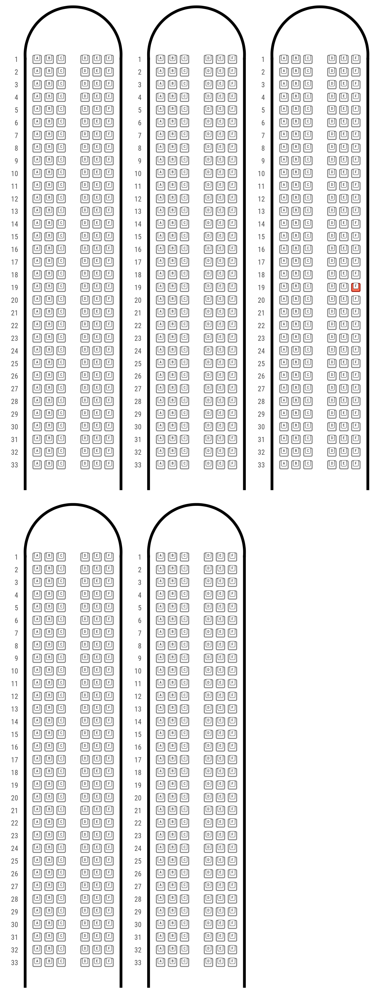
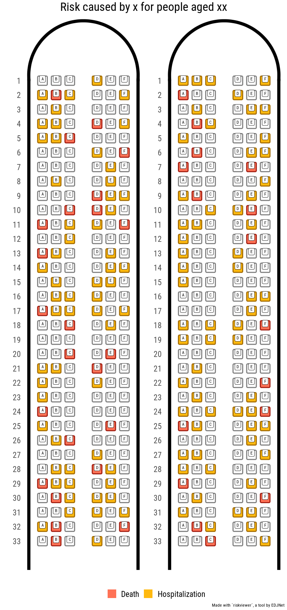
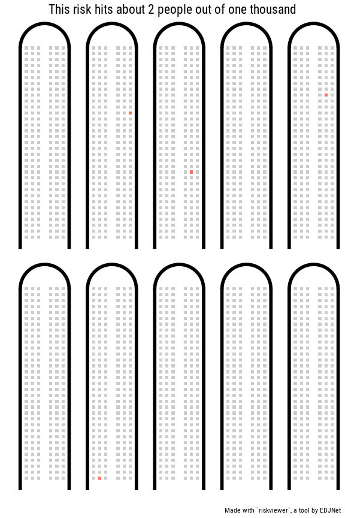
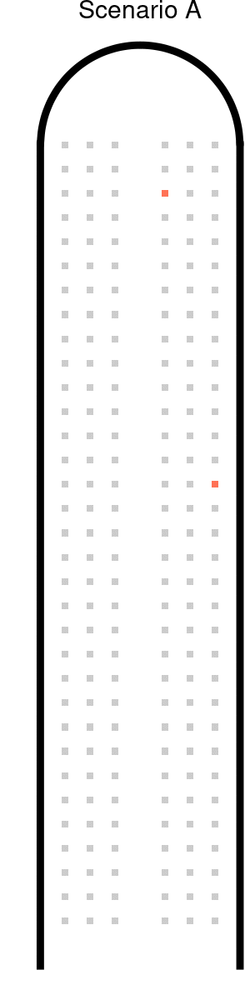
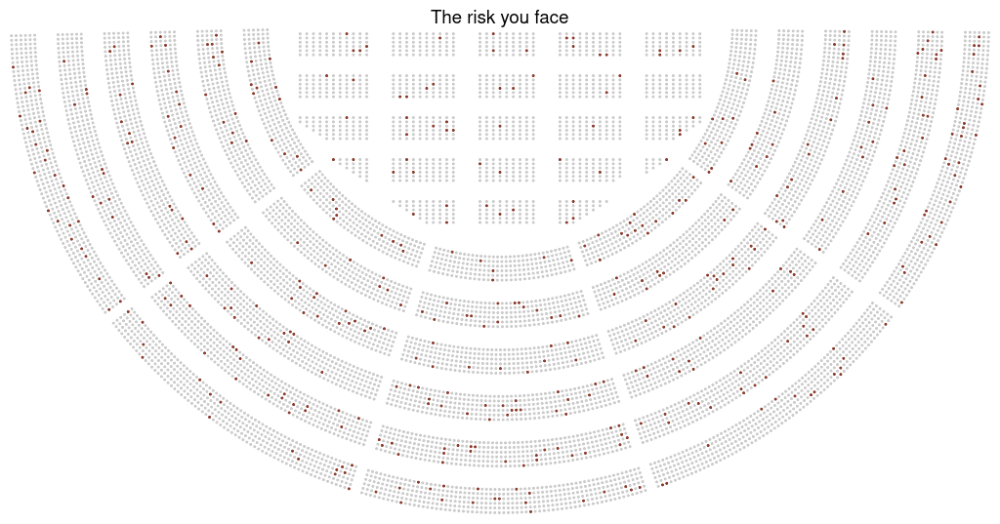
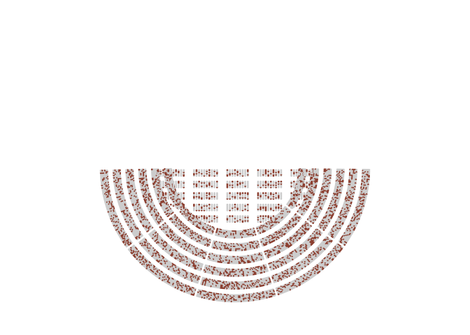
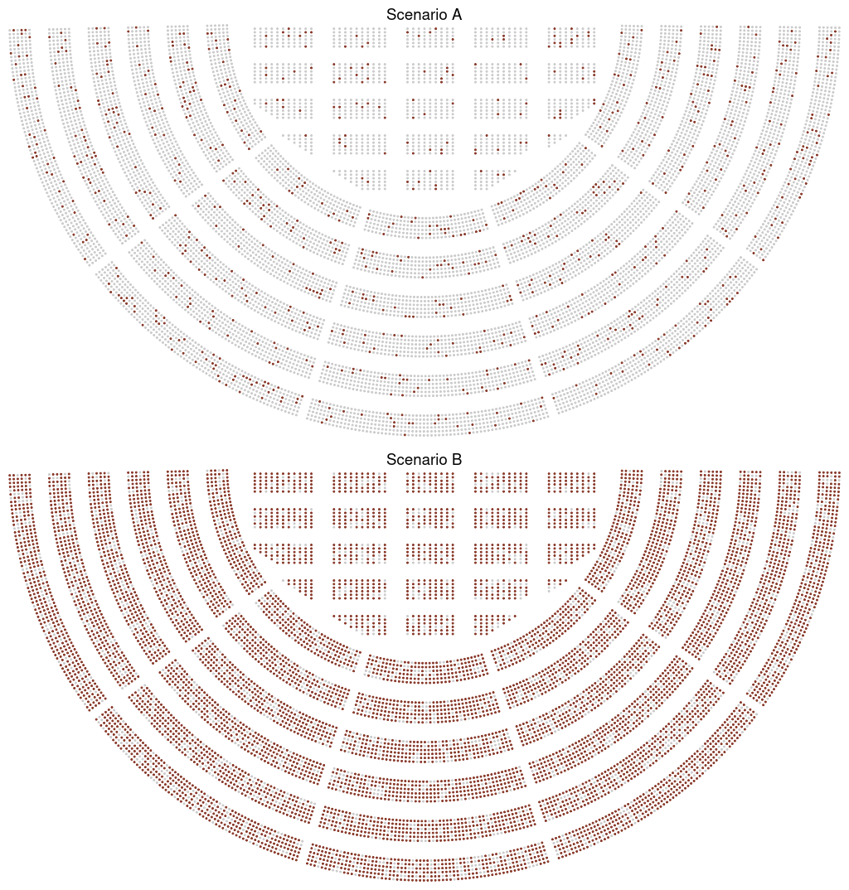
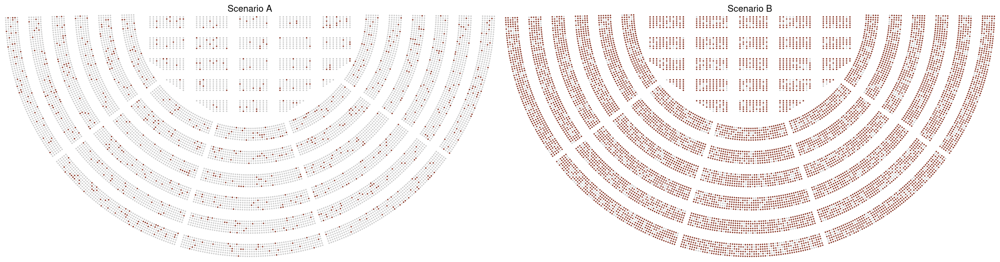

The goal of riskviewer is to provide a modern implementation of the “Risk Characterization Theater” proposed by …
It can be used to illustrate risk, as well as probability.
Installation
You can install riskviewer from GitHub with:
# install.packages("remotes")
remotes::install_github("giocomai/riskviewer)Risk characterisation
At this stage, this package provides two formats for representing risk.
Airplane
library("riskviewer")
library("patchwork")
plane_1 <- rv_create_airplane(risk_ratio = 0.1,
rows = 33,
title = "Scenario A",
font_family = "Roboto Condensed",
font_family_mono = "Roboto Mono")
plane_2 <- rv_create_airplane(risk_ratio = 0.3,
rows = 33,
title = "Scenario B",
font_family = "Roboto Condensed",
font_family_mono = "Roboto Mono")
plane_1 + plane_2 
If more than one airplane needed:
rv_create_airplane_combo(risk_ratio = 0.01,
number_of_planes = 3,
font_family = "Roboto Condensed",
font_family_mono = "Roboto Mono", guides = NULL)
rv_create_airplane_combo(risk_ratio = 0.001,
number_of_planes = 5,
font_family = "Roboto Condensed",
font_family_mono = "Roboto Mono",
legend_position = "none",
ncol = 3,
nrow = 2, guides = NULL)
Or, using more than one risk consideration:
risk_ratio <- tibble::tribble(~Risk, ~Ratio,
"Hospitalization", 0.3,
"Death", 0.1)
combo_gg <- rv_create_airplane_combo(risk_ratio = risk_ratio,
number_of_planes = 2,
font_family = "Roboto Condensed",
font_family_mono = "Roboto Mono",
legend_position = "bottom",
guides = "collect")
# ggplot2::ggsave(filename = "combo_gg.png", plot = combo_gg,
# width = 8, height = 16)
#
# knitr::plot_crop(x = "combo_gg.png")
combo_gg +
patchwork::plot_annotation(title = "Risk caused by x for people aged xx",caption = 'Made with `riskviewer`, a tool by EDJNet',
theme = ggplot2::theme(plot.title = ggplot2::element_text(size = 24, family = "Roboto Condensed", hjust = 0.5)))
Compact airplane
combo_gg <- rv_create_airplane_combo(risk_ratio = risk_ratio,
number_of_planes = 2,
font_family = "Roboto Condensed",
font_family_mono = "Roboto Mono",
legend_position = "bottom",
guides = "collect",
compact = TRUE)
combo_gg
The compact format makes it easier to have many planes:
rv_create_airplane_combo(risk_ratio = 0.002,
number_of_planes = 10,
compact = TRUE,
font_family = "Roboto Condensed",
legend_position = "none",
ncol = 5,
nrow = 2,
guides = NULL) +
patchwork::plot_annotation(title = "This risk hits about 2 people out of one thousand",caption = 'Made with `riskviewer`, a tool by EDJNet',
theme = ggplot2::theme(plot.title = ggplot2::element_text(size = 16, family = "Roboto Condensed", hjust = 0.5)))
Animate airplane
gg_airplane_animated <- rv_create_airplane_animation()
gganimate::animate(plot = gg_airplane_animated,
#renderer = gganimate::ffmpeg_renderer(),
height = 8,
width = 2,
units = "in",
res = 150)
Arena
It is possible to create a ggplot object that looks like the seatmap of an arena, but this implies using two different projections, combining the graph, and leaving the top half empty.
library("riskviewer")
rv_create_arena(ratio = 0.05,
title = "The risk you face",
ggplot = FALSE,
quality = "low")
library("riskviewer")
rv_create_arena(ratio = 0.3, ggplot = TRUE)
Combine more
graphs <- list(rv_create_arena(ratio = 0.1, title = "Scenario A", ggplot = TRUE),
rv_create_arena(ratio = 0.8, title = "Scenario B", ggplot = TRUE))
rv_img(plot = graphs, stack = TRUE)
rv_img(plot = graphs, stack = FALSE)
Export in other formats
ggplot2::ggsave(filename = "risk_arena.svg",
plot = rv_create_arena(ratio = 0.1, ggplot = TRUE),
width = 10,
height = 10,
units = "in")